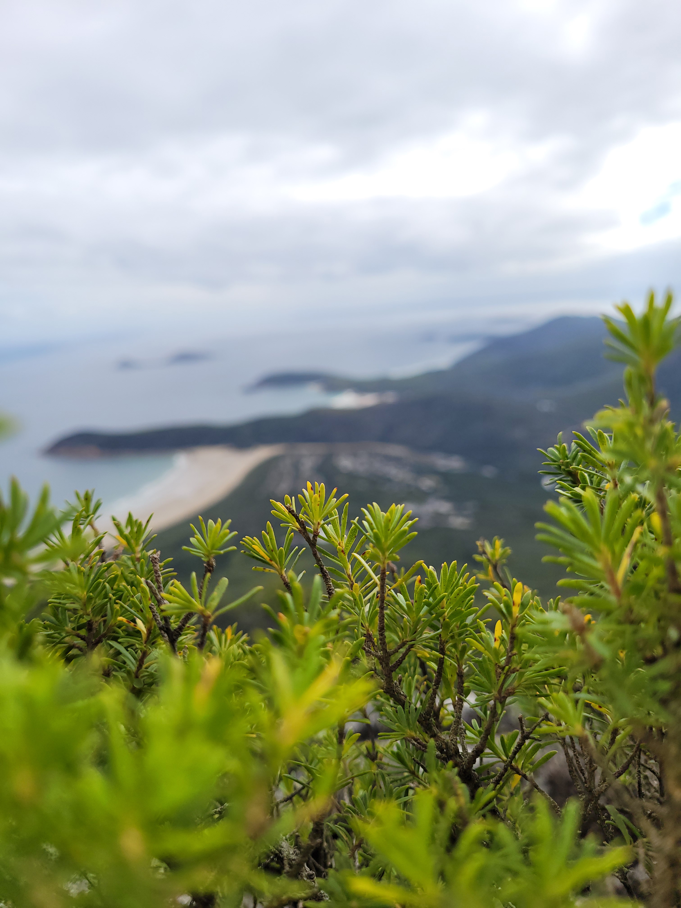

1. Shoot in RAW
Before you even start thinking of taking your photo is to set up your camera, the main setting that is a must change is RAW, RAW helps make the photo be more exposed to different editing abilitys and have a wider rage of colours to make your photo pop
2. What is a high contrast
As you might already know, Contrast is the difference between the darkest darks and the brightest white of an image. The more you increase the contrast, the better your photo’s dynamic range. And when you decrease the contrast, the difference between the blacks and whites begins to thin.
This edit makes the image look dramatic as well as edgy. And this style can be applied to either a colored image or a black-and-white image.
3. Presence Adjustments
• Clarity: Increase clarity to enhance midtone contrast and give the image more definition.
• Dehaze: Use the dehaze slider sparingly to add or reduce atmospheric haze, which can also affect contrast.
4. Colour Adjustments
Go to the HSL/Color panel.
• Saturation: Increase the saturation of key colors to make them pop. Be careful not to overdo it.
• Luminance: Adjust the luminance of individual colors to further control how bright or dark specific colors appear.
5. Detail Enhancements
• Sharpening: Increase sharpening to make details stand out.
• Noise Reduction: Apply noise reduction if necessary, especially if the contrast adjustments have introduced noise.
6. Example Settings
While the exact settings will vary depending on the image, here’s an example starting point for high contrast edits:
• Exposure: +0.10
• Contrast: +40
• Highlights: -30
• Shadows: +20
• Whites: +25
• Blacks: -40
• Clarity: +20
• Dehaze: +10
• Tone Curve: S-curve
7. Tips
• Balance: Ensure that increasing contrast does not lead to loss of important details. Always check before and after to ensure the edit enhances the photo without sacrificing quality.
• Consistency: Apply similar settings across a series of photos for a consistent look.
• Presets: Consider saving your adjustments as a preset for future use.
By following these steps, you can create a high contrast look that adds drama and depth to your images in Lightroom.


Some of my socials